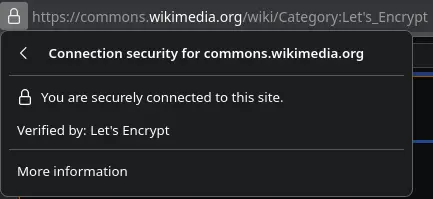

Short answer
Mixed content is an HTTPS page requesting an HTTP asset. Browsers may block that asset. If the only copy of a specification is inside a blocked image, the page no longer states the fact. Move assets to HTTPS and keep the words in HTML.

Definition
Fetchability of the document and fetchability of its images are related but not the same check. A 200 HTML response can still reference an insecure image, script, or stylesheet. Active mixed content can stop scripts. Passive mixed content can drop figures. Neither event repairs a missing sentence. SEO Health cares that the intended text and the evidence file can be fetched. It does not treat a lock icon as a ranking.
What belongs on the page
Load the canonical URL over HTTPS and list requests that still use http://. Update templates so generated image and script URLs inherit HTTPS. Do not leave the specification only in the figure. A caption can credit a source. The claim belongs in text.
What to check
- Find HTTP asset URLs referenced from HTTPS pages.
- Fix them in the template.
- Repeat the specification in HTML text.
- Re-fetch the page and the asset.
A practical example
A datasheet thumbnail is still requested as HTTP, so the figure disappears on the live HTTPS page, and the HTML never states the pressure range. The repair serves the image over HTTPS and writes the range in text beside it. No security badge is claimed as a commercial result.
What this does not claim
Fixing mixed content does not guarantee rankings or AI citations. Mika does not treat HTTPS as a promise of placement.
Where Mika Visibility files this
A blocked asset is a fetch failure for that file, not a ranking signal to chase. Mika Visibility files this on the SEO Health track, with crawlability, status codes, and page basics. SEO Growth remains a separate question about coverage that is still unwritten. GEO remains a separate question about whether a careful reader can find a supportable answer. There is no blended overall score.
FAQ
What is mixed content on an HTTPS page?
Mixed content is an HTTPS page requesting an HTTP asset. Browsers may block that asset. If the only copy of a specification is inside a blocked image, the page no longer states the fact. Move assets to HTTPS and keep the words in HTML.
Why can’t a blocked image be the only specification?
Fetchability of the document and fetchability of its images are related but not the same check. A 200 HTML response can still reference an insecure image, script, or stylesheet. Active mixed content can stop scripts. Passive mixed content can drop figures. Neither event repairs a missing sentence. SEO Health cares that the intended text and the evidence file can be fetched. It does not treat a lock icon as a ranking.
Does fixing mixed content guarantee rankings?
Fixing mixed content does not guarantee rankings or AI citations. Mika does not treat HTTPS as a promise of placement.
Next step
Run a structured SEO + GEO audit to see health findings, growth gaps, and a blueprint you can act on.
Clearer entities, answers, evidence, and context make pages easier to understand and reference. Results in any answer product are not guaranteed.